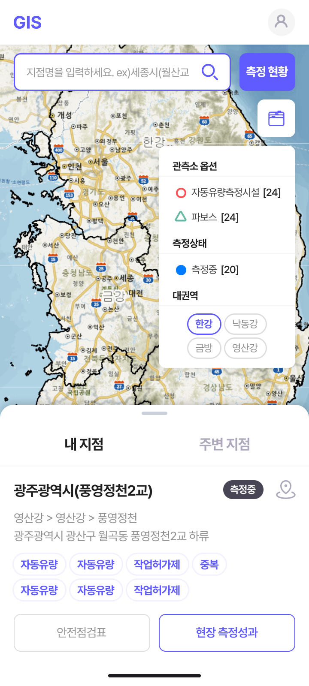
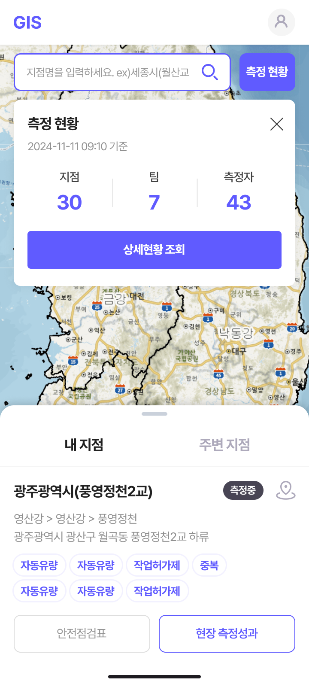
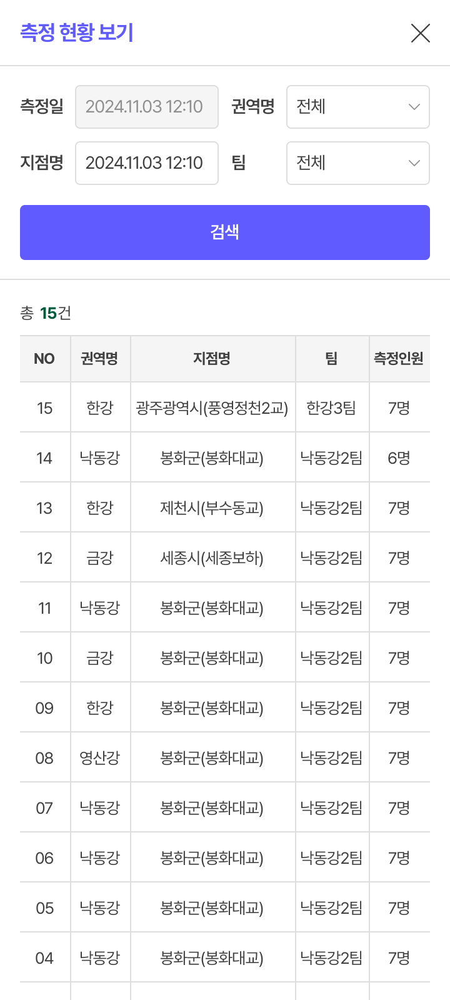

AS-IS
한 화면에 지표를 모두 펼쳐
한 화면에 지표를 모두 펼쳐
정보 위계가 평평
그리드·카드 체계로
위계 재정의
한 화면에 모든 지표를 펼치던 구조를 그리드와 카드로 분할. 우선순위에 따라 위계를 다시 잡았습니다.
관제 플랫폼 디자인
고밀도 관제 정보를 PC와 모바일에서 동일한 구조로 다룰 수 있도록 설계한 관제 플랫폼 UI입니다.
PC와 모바일의 화면 차이에서 오는 정보 위계·가독성·식별성 문제를 그리드·모바일 화면 분리·컬러 체계 세 레이어로 풀었습니다.
한 화면에 모든 지표를 펼치던 구조를 그리드와 카드로 분할. 우선순위에 따라 위계를 다시 잡았습니다.
모바일에서는 지도를 전체 화면으로 띄우고, 상세 데이터는 시트 형태로 분리해 좁은 화면에서도 가독성과 조작성을 확보했습니다.
보수적인 공공 톤을 벗어나 메인 컬러 #605BFF를 정의하고, 신호등 상태 체계(정상·주의·경고)로 관제 식별성을 높였습니다.
대시보드·지도·관측소 상세·알림 4개 메인 뷰를 PC와 모바일로 설계했습니다. PC는 통합 모니터링, 모바일은 현장 4단계 흐름에 맞춰 정리했습니다.





보라 메인 컬러 #605BFF를 중심으로 관제 시스템 톤을 현대화. PC 1920px · Mobile 360px 기준으로 토큰을 정의했습니다.
Pretendard · Bold · Semi-bold · Medium · Regular